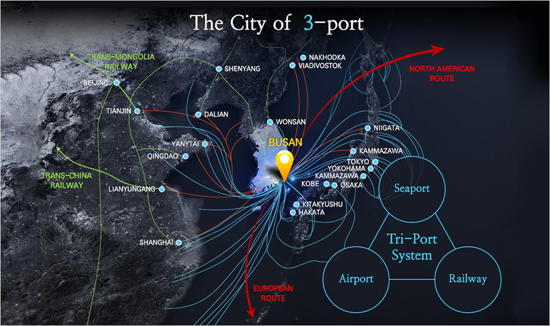

世界物流的战略要地
- Home
- 投资优势
- 世界物流的战略要地
全球物流的战略要地
未来，至2030年开拓连接欧洲和亚洲的北极航道，从釜山到欧洲的距离与现有距离相比将会缩短40%，到北美的距离将会缩短30%。并且，釜山是可实现从韩国出发贯穿中国、俄罗斯、欧洲的“丝绸之路快速铁路(SRX)”计划的核心出发点，届时，釜山将会从东北亚物流中心城市发展成为世界物流中心城市。



东北亚海洋物流枢纽—釜山
以2014年为基准，釜山港既是世界第五大集装箱港口又是占韩国出入集装箱吞吐量75%的韩国国内最大规模港口，可谓是年均吞吐量超过1,700万TEU的超级港口，也是与世界100多个国家、500个港口进行交流的东北亚物流中心基地。计划至2020年在釜山新港新增45个泊位，在腹地营造具备最尖端系统的物流中心，最大限度地缩小前置时间，作为世界级港口、东北亚物流枢纽站稳脚跟。